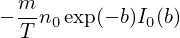

The perturbed distribution function δF given in Eq. (141) contains two terms. The first term is gyro-phase dependent while the second term is gyro-phase independent. The perpendicular velocity moment of the second term will give rise to the so-called diamagnetic flow. For this case, it is crucial to distinguish between the distribution function in terms of the guiding-center variables, fg(X,v), and that in terms of the particle variables, fp(x,v). In terms of these denotations,  equation (141) is written as
|
| (262) |
Next, consider the perpendicular flow U⊥ carried by δfg. This flow is defined by the corresponding distribution function in terms of the particle variables, δfp, via,
 | (263) |
where n is the number density defined by n = ∫ δfpdv. Using the relation between the particle distribution function and guiding-center distribution function, equation (263) is written as
|
| (264) |
Using the Taylor expansion near x, δfg(x −ρ,v) can be approximated as
|
| (265) |
Plugging this expression into Eq. (264), we obtain
 | (266) |
As mentioned above, δfg(x,v) is independent of the gyro-angle α. It is obvious that the first integration is zero and thus Eq. (266) is reduced to
|
| (267) |
Using the definition ρ = −v × e∥∕Ω, the above equation is written
where H =  √ó‚àጥfg(x,v), which is independent of the gyro-angle Œ± because both e∥(x)‚à(x) and Œ¥fg(x,v) are independent of Œ±. Next, we try to perform the integration over Œ± in Eq. (268). In terms of velocity space cylindrical coordinates (v∥,v⊥,Œ±), v⊥ is written as
 | (269) |
where  and
and  are two arbitrary unit vectors perpendicular each other and both perpendicular to
B0(x). H can be written as
are two arbitrary unit vectors perpendicular each other and both perpendicular to
B0(x). H can be written as
 | (270) |
where Hx and Hy are independent of α. Using these in Eq. (268), we obtain
![∫
nU ⊥ = v⊥(ˆx cosα + ˆysinα)v⊥(Hx cosα+ Hy sin α)dv
∫
= v2⊥[ˆx(Hx cos2α + Hy sinα cosα)+ ˆy(Hx cosαsinα +Hy sin2α)]dv. (271)](nonlinear_gyrokinetic_equation302x.png)

 
 
![∫ ∫ ∫
nU = ∞ dv ∞ v dv 2πv2 [ˆx(H cos2 α+ H sin αcosα)+ ˆy(H cosαsinα + H sin2α)]dα
⊥ − ∞ ∥ 0 ⊥ ⊥ 0 ⊥ x y x y
∫ ∞ ∫ ∞ ∫ 2π
= dv∥ v⊥dv ⊥ v2⊥ (ˆxHx cos2α + ˆyHy sin2α)dα
∫−∞∞ ∫0∞ 0
= dv∥ v⊥dv ⊥[v2⊥ (xˆHx π + ˆyHyπ)]
∫− ∞ ∫0
∞ ∞ 2
= − ∞ dv∥ 0 v⊥dv ⊥[v⊥H π ]
∫ ∞ ∫ ∞ e
= dv∥ v⊥dv ⊥[v2⊥ -∥× ∇ δfg(x,v )π ]
− ∞ ∫ 0∞ ∫ ∞ Ω
= e∥× ∇ dv v dv δf (x,v)v2⊥-2π
Ω −∞ ∥ 0 ⊥ ⊥ g 2
e∥--
= mΩ ×∇ δp⊥, (272)](nonlinear_gyrokinetic_equation303x.png)